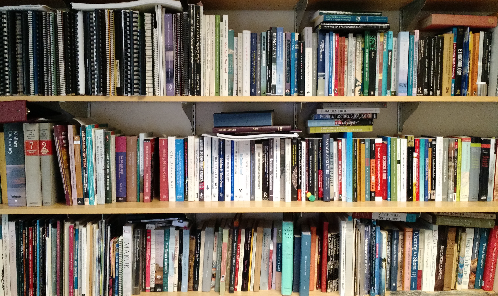
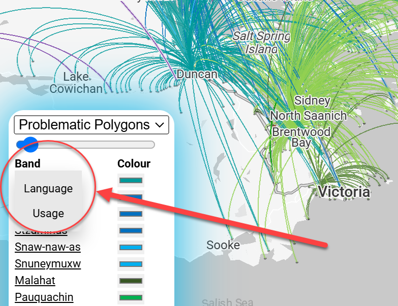
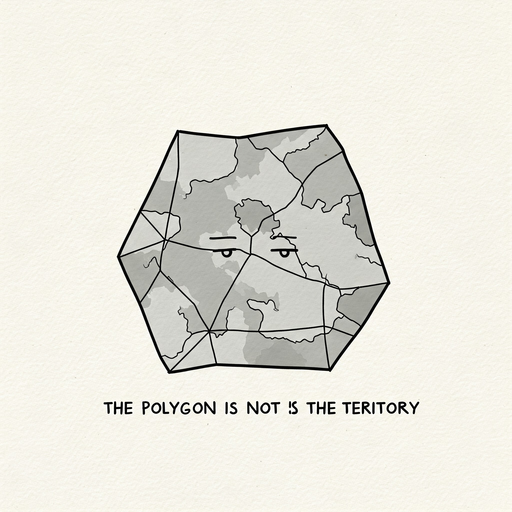

About the Problematic Polygons Experiment
Data Compilation from Ethnographic Sources
To create our experimental visualization, we compiled data from publicly available ethnographic sources. These sources provided valuable information, including approximate latitude and longitude for sites of interest, Indigenous place names, land use information, and the individuals who shared this knowledge, along with their band and village affiliations.
We carefully extracted and organized this data, creating a database that would allow the deck.gl code to generate connections between individuals' home places and the territories they identified as significant. This approach enabled us to map a network of relationships to the land, based on the rich information contained within existing ethnographic records.


Visualization based on "Band", "Language", and "Use"
Using the compiled ethnographic data, we developed three distinct visualizations in deck.gl: one centered on "band", one on "language", and one on "use". Each visualization highlights different aspects of the data and offers a unique perspective on Indigenous land relationships.
The "band" visualization emphasizes connections between individuals and their contemporary First Nation affiliations, showcasing community-based territoriality.
The "language" visualization focuses on the natal language of the speakers, revealing relationships between communities with shared linguistic roots.
The "use" visualization categorizes connections based on the type of place, such as resource procurement sites or settlements, illustrating the diverse ways in which people interact with the landscape. At this point, the use codes are as folllows:
| Use Code | Meaning |
|---|---|
| Indigenous Place Name | Areas named by Indigenous communities, reflecting deep cultural and historical significance. |
| Resource Procurement Sites | Locations where Indigenous peoples traditionally gathered resources like food, materials, or medicines. |
| Settlements | Various types of Indigenous settlements, including villages, seasonal camps, and historical dwelling areas. |
| Other Places of Significance | Additional locations with cultural, spiritual, or historical importance, as identified in ethnographic records. |
These three visualizations, each with its own color scheme and arc classifications, provide a multifaceted understanding of Indigenous territorial connections.
Data Cautions and Experimental Purpose
It is crucial to acknowledge the limitations of our data and the experimental nature of this cartographic exercise. Our visualizations are based on a relatively small dataset derived from published ethnographic sources, which may not capture the full complexity of Indigenous land tenure systems. Important places may be missing, and gendered landscapes may be underrepresented due to the focus of early ethnographers.
Therefore, these maps should not be interpreted as definitive representations of any particular territory. Instead, they serve as an experiment in exploring alternative ways to visualize Indigenous relationships with the land, moving beyond the limitations of traditional polygon-based maps. Our aim is to provoke dialogue, inspire further research, and encourage the development of more nuanced and culturally sensitive cartographic methods.
